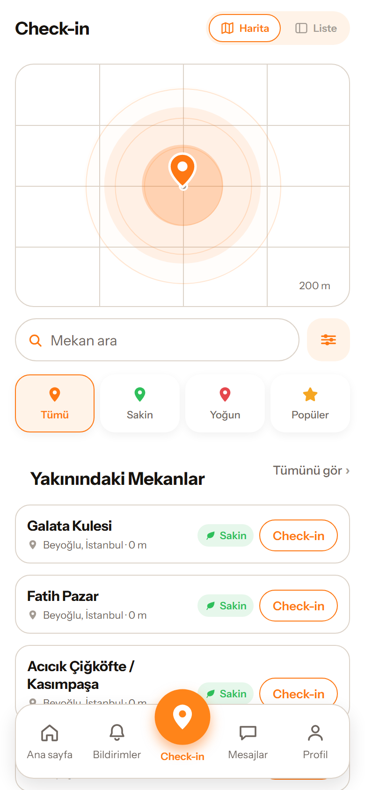
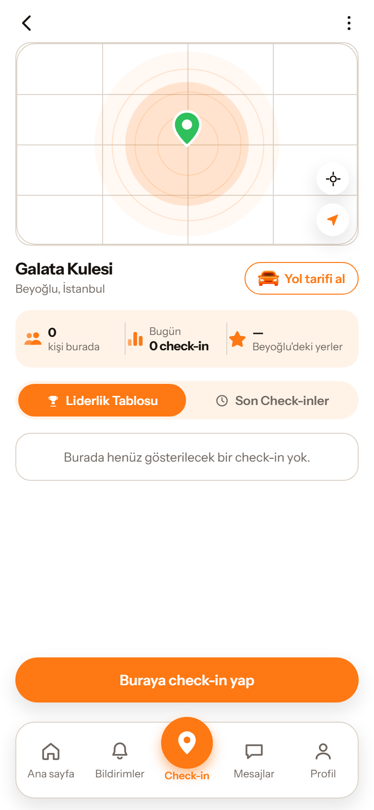

Slooin, aynı anda aynı mekânda olanları birbirine gösterir. Check-in yap, görünür ol, yanındakini fark et.

Mekâna girdin, bir dokunuş.
Mekânın "şu an burada" listesindesin.
1 km içinde kim nerede, haritada.
Aynı mekândakine arkadaşlık isteği.
Kabul edildi, birebir yaz.

Slooin canlı konum paylaşmaz; sen check-in yaparsın, mekân görünür, koordinat kısa sürede silinir.